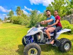

Audience
The target audience are those that are always out doors, who like adventures, hiking and traveling. It is aimed towards young adults and parents with children who are adventurous. It is also aimed for residence of these particular location so as to help them plan their day around the weather, it will help them in their business and social plans.
Personas
Terry Haake: Terry Haake is an advanterous indivdual who loves biking, hiking, running. HE loves nature and Loves being in it. So if the weather is great He is always out
Sally: Sally is a teacher/ photgrapher. She loves nature and loves caturing it. Different weather means different style of image. So knowing the weather helps her know what to expect and how to prepare.
Scenarios
- I wonder what the weather would be like tomorrow for the picnic
- I hope the weather is great tomorrow for the kite flying competition
- We need to start hiking early in the morning
- Great weather for sailing just like the app said
- We need to plan that fishing trip according to the weather